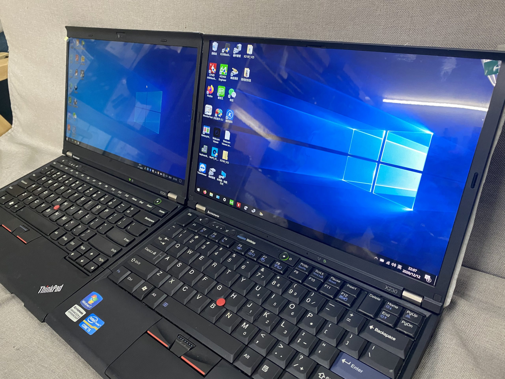

ThinkPads are known for being highly upgradeable, which makes them great for users who want to extend the life of
their devices. Old ThinkPads, like the X230, often have upgradable RAM, storage, and even CPUs in some cases.
Upgrading these components can help users keep their devices running smoothly for years to come.
Repairability
Another benefit of old ThinkPads is that they are generally easier to repair than newer laptops. Many components
are easy to access and replace, which means that users can often fix problems themselves instead of having to
take their devices to a repair shop. This not only saves money but also reduces waste, as fewer laptops end up
in landfills.
Modding
ThinkPads are also popular among modders who enjoy customizing their devices. There are many different mods
available for old ThinkPads, from changing the keyboard to adding new features like a backlit display. These
mods can help users tailor their devices to their specific needs and preferences.
My ThinkPad X230
I personally use a ThinkPad X230 for work, and it has been a great machine for me. I appreciate its sturdy build
quality, comfortable keyboard, and portability. I also appreciate the fact that I can upgrade its components if
needed. Recently, I modded my X230 with Coreboot, which is an open-source firmware that replaces the proprietary
BIOS. This has improved the boot time and security of my device.
Classic Keyboard
Another mod I did to my X230 was replacing the chiclet keyboard with a classic keyboard. The classic keyboard has
a more tactile feel and is considered by many ThinkPad enthusiasts to be superior to the chiclet keyboard. This
mod required some hardware modifications, but I found it to be worth the effort.
Future Mods
In the future, I plan to upgrade the display and CPU of my X230. The stock display is adequate, but I would like
to upgrade to a higher resolution IPS panel for better color accuracy and viewing angles. I also plan to upgrade
the CPU to a quad-core i7 for better performance when running demanding applications. These upgrades will
require some more technical expertise and may require some soldering, but I am excited to see how they improve
the performance of my X230.

Conclusion
Overall, old ThinkPads like the X230 are great machines that offer a lot of customization and upgradability
options. Whether you are looking for a sturdy workhorse for everyday use or a fun project to tinker with, an old
ThinkPad is definitely worth considering.